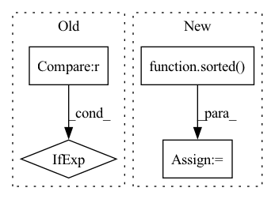

Pattern ID :9317
Before Change
" object.")
task_type, observed_classes, model_classes = infer_task_type_and_classes(model, dataset)
model_classes = model_classes if model_classes is not None else observed_classes
fi, _ = _calculate_feature_importance(model=model,
dataset=dataset,
model_classes=model_classes,After Change
model_classes = infer_classes_from_model(model)
labels = get_all_labels(model, dataset)
observed_classes = sorted( labels.dropna().unique().tolist())
if dataset.label_type:
task_type = dataset.label_type
elif model_classes:In pattern: SUPERPATTERN
Frequency: 3
Non-data size: 4
Instances Fragment ID: 33440948
Project Name: deepchecks/deepchecks
Commit Name: f984ff43f5ae9cb4021de5e4c4e8296a8a13bd99
Time: 2023-01-15
Author: matan@deepchecks.com
File Name: deepchecks/tabular/feature_importance.py
M Class Name: AnonimousClass
N Class Name: AnonimousClass
M Method Name: calculate_feature_importance(7)
N Method Name: calculate_feature_importance(7)
M Parent Class:
N Parent Class:
M File Name: deepchecks/tabular/feature_importance.py
N File Name: deepchecks/tabular/feature_importance.py
M Start Line: 95
M End Line: 96
N Start Line: 96
N End Line: 107
Before Change
// Note that we may need to skip the 0th element in result (null mapping)
assert_eq(
cat_expect,
cat_result.iloc[1:] if len(cat_result) > len(cat_expect) else cat_result,
check_index=False,
)
else:After Change
client, tmpdir, datasets, freq_threshold, part_mem_fraction, engine, cat_cache, on_host, shuffle
):
paths = glob.glob(str(datasets[engine]) + "/*." + engine.split("-")[0])
paths = sorted( paths)
if engine == "parquet":
df1 = cudf.read_parquet(paths[0])[mycols_pq]
df2 = cudf.read_parquet(paths[1])[mycols_pq]
elif engine == "csv": Fragment ID: 33440949
Project Name: nvidia/nvtabular
Commit Name: 8cb492e153ceb0bb56d95a311e43b9f30f39a7b1
Time: 2021-02-08
Author: rzamora217@gmail.com
File Name: tests/unit/test_dask_nvt.py
M Class Name: AnonimousClass
N Class Name: AnonimousClass
M Method Name: test_dask_workflow_api_dlrm(9)
N Method Name: test_dask_workflow_api_dlrm(9)
M Parent Class:
N Parent Class:
M File Name: tests/unit/test_dask_nvt.py
N File Name: tests/unit/test_dask_nvt.py
M Start Line: 65
M End Line: 127
N Start Line: 55
N End Line: 122
Before Change
for override_key, override_state_dict in override_name2state_dict.items():
depth = len(override_key.split(".")) - 1
sorted_state_dicts[depth].append(override_state_dict)
max_depth = depth if depth > max_depth else max_depth
sorted_state_dicts = sorted_state_dicts[: max_depth + 1]
return sorted_state_dictsAfter Change
depth2override_state_dicts[depth] = [override_state_dict]
else:
depth2override_state_dicts[depth].append(override_state_dict)
depth2override_state_dicts = OrderedDict(sorted( depth2override_state_dicts.items()) )
return depth2override_state_dicts
Fragment ID: 33440947
Project Name: eora-ai/torchok
Commit Name: 961bcf5658d68296a207353f876289a489c7a62c
Time: 2022-07-04
Author: rashit.bayazitov.1995@gmail.com
File Name: src/constructor/load.py
M Class Name: AnonimousClass
N Class Name: AnonimousClass
M Method Name: sort_state_dict_by_depth(1)
N Method Name: sort_state_dict_by_depth(1)
M Parent Class:
N Parent Class:
M File Name: src/constructor/load.py
N File Name: src/constructor/load.py
M Start Line: 37
M End Line: 46
N Start Line: 38
N End Line: 47